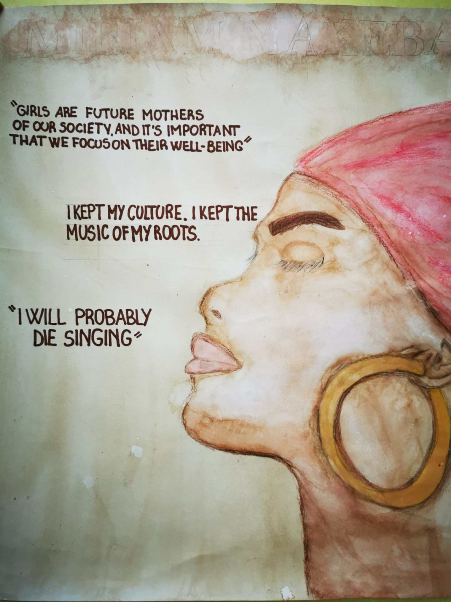

Miriam Makeba
Miriam Makeba, chiamata Mama Africa, era una cantautrice, attrice e attivista per i diritti civili sudafricana. Grazie ai suoi canti di gioia e dolore ispirati dalla condizione della popolazione nera in Sudafrica, ha dato tutta se stessa per la lotta alla schiavitù, alla discriminazione razziale e di genere e per la piena democrazia nel suo paese. La sua passione e ostinazione sono state ripagate con grandi risultati, come la fine del regime bianco in Sudafrica! Myriam Makeba ha collaborato con molti artisti provenienti da culture e paesi diversi. Ha mescolato tutte le influenze ricevute e ha creato uno stile unico che mescolava i suoni tradizionali africani con il jazz, il pop e il folk. La sua musica era chiamata "world music" perché era influenzata da culture diverse. La sua musica è caratterizzata da ritmi forti e i testi affrontano questioni sociali e politiche. Nel 1990 Miriam Makeba partecipa al Festival di Sanremo (edizione con cantanti stranieri) con il brano 'Give Me a Reason' ma uno dei suoi brani più iconici è 'Pata Pata'. È stato prodotto nel 1967 e mescola ritmi africani con suoni contemporanei e mostra la voce potente di Makeba. "Pata Pata” è cantato in lingua Xhosa, una delle lingue ufficiali del Sud Africa. Il testo descrive una danza, con il titolo “Pata Pata” che si riferisce agli applausi durante la danza. La canzone divenne un successo mondiale e contribuì a fare di Miriam Makeba un'ambasciatrice globale della musica africana.
Biografia
Miriam Makeba nasce il 4 marzo 1932 a Johannesburg, ai tempi dell'apartheid. La sua vita cambia quando, negli anni ‘50, incontra Nelson Mandela che gli infonde un forte desiderio di speranza e libertà. Inizia la sua carriera da cantante e diventa una star, anche fuori dei confini del suo Paese, con il gruppo dei "Manhattan Brothers”. Nel 1959, Miriam recita una breve parte nel film anti-apartheid «Come Back, Africa», ma, dopo il suo primo tour negli Stati Uniti, viene esiliata dal governo sudafricano perché ritenuta pericolosa, essendo diventata il simbolo di un popolo oppresso che vuole essere libero. L’esilio dura trent'anni, ma in America, Miriam incide il suo primo disco da solista diventando la prima artista africana a vincere un Grammy Award. Purtroppo anche in America incontra serie difficoltà e dopo il matrimonio con Stokely Carmichael, un leader dei movimenti radicali Neri, gli viene revocato il permesso di soggiorno. Decide quindi di tornare in Africa e trova nella Guinea una seconda patria. Come delegato della Guinea prende parte a diverse missioni diplomatiche alle Nazioni Unite e, grazie al suo impegno civile, riceve premi da varie organizzazioni (come l'Unesco) oltre ad incontrare grandi leader come John Kennedy, Fidel Castro, Mitterrand … Con la fine dell’apartheid nel 1990, Miriam torna in Sud Africa, riprende a cantare e viene coinvolta in diversi progetti umanitari fra cui la tutela delle donne nere. Miriam muore in Italia, a Castel Volturno, a causa di un attacco cardiaco nella notte del 9 novembre 2008 dopo aver terminato la sua ultima esibizione durante un concerto anticamorra (che aveva sfruttato ed ucciso degli immigrati africani).
Miriam Makeba called Mama Africa was a singer-writer, actress, and activist for South African civil rights. Thanks to her happy and painful songs inspired by the condition of South Africa's black population. She gave all herself to fight against slavery, racial and gender discrimination, and for the democracy of her country.Her passion and obstinacy were rewarded with big results, like the end of the withe kingdom in South Africa. Miriam Makeba collaborated with a lot of artists from different cultures and countries. She mixed all the influences received and she made a unique style, she mixed every African traditional sound with jazz, pop, and folk. Her music was called world music because it was influenced by different cultures. In the 1990s, Miriam Makeba took part in the Festival di Sanremo (an edition with foreign singers) with the song “Give Me a Reason” but one of the most iconic songs was Pata Pata. It was made in 1967 and it mixed African rhythms with modern sounds and shows the big voice of Miriam Makeba. Pata Pata was sung in the Xhosa language, one of the official languages of South Africa.The text describes a dance with the title of Pata Pata which refers to the applause during the dance. The song became a global success, and it helped Miriam Makeba to become an ambassador of global African music.
Biography
Miriam Makeba was born on the 4th of March 1932 in Johannesburg, during the Apartheid period. Her life changed when in the 50s she met Nelson Mandela, who inspired her with a sense of hope and freedom. She started her singer life, and she became a star even outside of her country with the musical group Manhattan Brothers in 1959. Miriam had a small role in an anti-apartheid movie. But after the first tour in the USA, she was exiled by the South African government, because she was considered dangerous, being a symbol of oppressed people that wanted freedom.The exile lasted 30 years, but while she was in America, she recorded her first solo album with the help of Harry Belafonte, and she became the first African artist to win a Grammy Award.Unfortunately, even in America, Miriam encountered serious difficulties and after her marriage to Stokely Carmicheal, a leader of the radical black movements, her residence permit was revoked. After that, she decided to return to Africa and found a second residence permit in Guinea.As a delegate from Guinea, she took part in various diplomatic missions to the National Unit and thanks to her civil commitment, she received awards from various organizations (such as UNESCO) as well as meeting great leaders such as John Kennedy, Fidel Castro, Mitterrand… With the end of apartheid in 1990, she started singing again and became involved in various humanitarian projects including the protection of black women. Miriam died in Italy, in Castel Volturno, on the night of November 2008 after finishing her last performance.
Image Gallery

v>